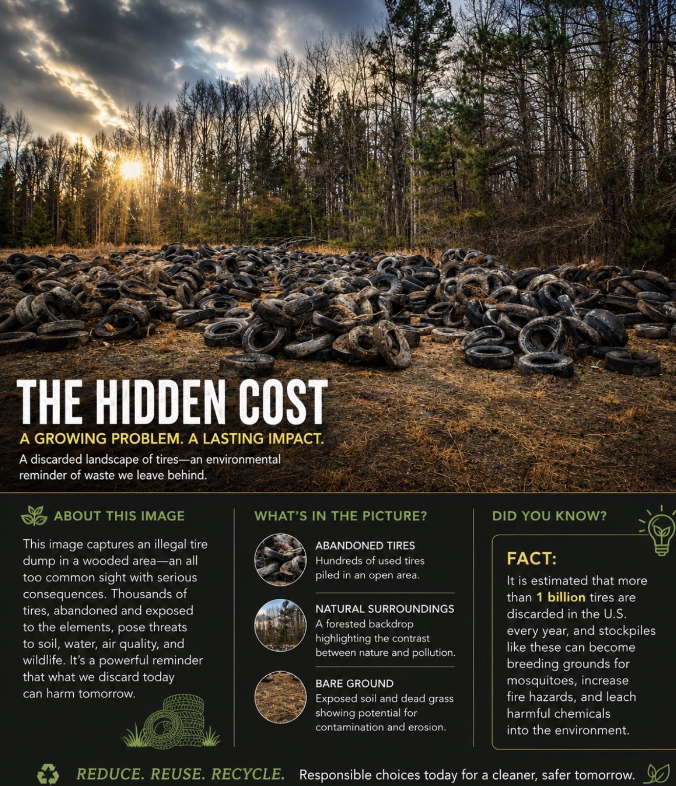
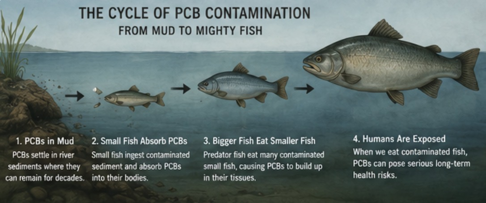

Water Quality
Monitoring rivers, streams, wetlands, and lakes through field testing and documented sampling.
Observe. Research. Protect.
Tideline Research Institute advances environmental understanding through field science, laboratory analysis, wildlife documentation, photography, and public education.
Explore Our ResearchWho We Are
Our mission is to advance the understanding, conservation, and restoration of natural ecosystems throughout the Mid-Atlantic while promoting healthy waterways for our children.
Core Research
Monitoring rivers, streams, wetlands, and lakes through field testing and documented sampling.
Ethical observation and photographic documentation of wildlife and habitat conditions.
GIS, fixed-point photography, and long-term records of environmental change.
Quality-controlled analysis supported by documented procedures and chain of custody.
Programs
Repeat sampling and visual documentation at selected waterways.
Training volunteers to collect useful observations safely and responsibly.
Public demonstrations, student experiences, and accessible scientific reporting.
Every discarded tire represents more than litter—it can become a long-term environmental hazard affecting soil, water, wildlife, and public health. Tideline Research Institute is committed to educating communities about pollution and promoting responsible stewardship of our natural resources.

Environmental Spotlight
PCBs can remain in river sediments for decades, moving through the food chain from small aquatic organisms to larger fish consumed by people. Understanding this process is essential for protecting both public health and our waterways.

Learn how PCB contamination persists in aquatic ecosystems, why fish consumption advisories matter, and why greater public education and funding are needed to help protect communities that regularly fish Virginia's rivers.
Publications
Our planned annual report will combine water chemistry, wildlife observations, habitat assessments, maps, photography, and conservation findings.
Field Gallery
Connect
Partnership, volunteer, research, and media inquiries are welcome.
North Dinwiddie, Virginia 23803